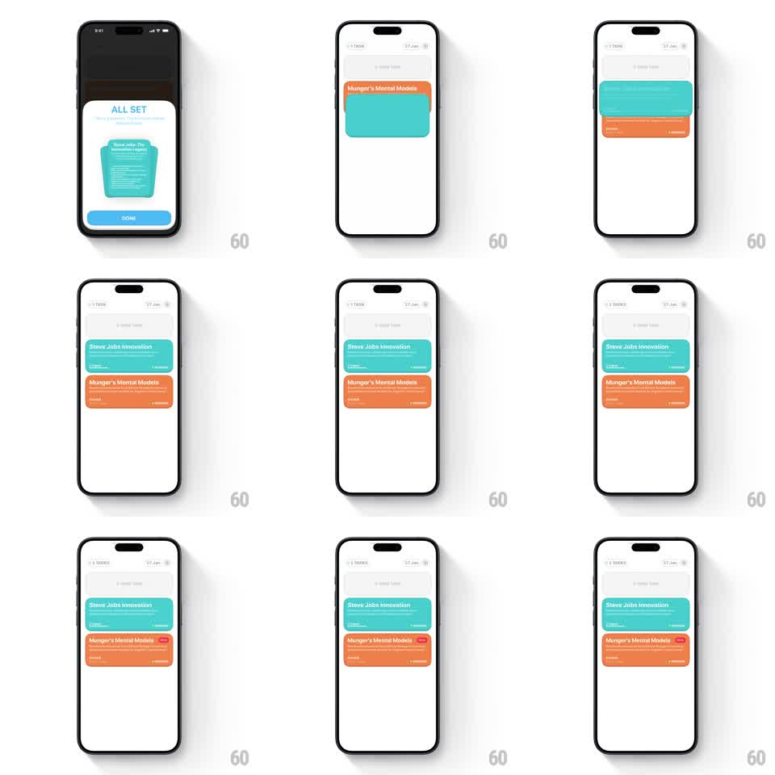

Media
Frame-by-frame

Rebuild this interaction 1:1: Eimi's sheet-to-list handoff - tapping DONE on the ALL SET sheet sends the sheet's mini card flying up into the tasks page, where it lands as a list item and springs the existing cards down to make room.

Rebuild this interaction 1:1: Eimi's sheet-to-list handoff - tapping DONE on the ALL SET sheet sends the sheet's mini card flying up into the tasks page, where it lands as a list item and springs the existing cards down to make room.
## Integration
Integration: stack-agnostic spec - springs given as stiffness/damping, timed motions as duration + curve; map every value to your framework and animation library of choice.
## Scene
Eimi: an "ALL SET" bottom sheet (teal mini card stack illustration, blue DONE button) over a dimmed tasks page; the tasks page itself lists colored cards ("Steve Jobs Innovation" teal, "Munger's Mental Models" orange with a red tag).
## Motion spec
Pattern: sheet card detaches and flies into its list position, pushing siblings down.
- Tap DONE: the button flashes (opacity pulse, 120ms) and the sheet's mini card lifts out of the sheet (scale 0.9 -> 1.02, 200ms) as the sheet itself slides down and away (300ms, ease-in).
- The card flies up along a shallow arc to its target slot in the list (translate over 450ms, ease-in-out), simultaneously morphing: corner radius, aspect, and content crossfade from the mini illustration to the full list-row layout (title, sub-rows) during the middle 60% of the flight.
- The existing list items below the target slot push down ahead of the arrival (translateY 0 -> card-height, spring ~280/18, starting when the flying card is 150px from its slot) - a springy parting, not a rigid shift.
- The card lands with a small overshoot (translateY -6 -> 0, spring ~350/16) and its shadow settles; the dim overlay fades out over the whole sequence (500ms).
- The header and list above the slot never move.
## Calibration
- The flying card is one continuous surface - no cut between sheet mini-card and list row.
- The sibling push-down must start before the card arrives, so the slot is already open.
## Reduced motion
Sheet fades out; the new row fades in at its slot (250ms) with siblings shifting instantly.
## Don't miss
- The card's teal color stays constant through the morph - color is the continuity cue.
- The DONE sheet's background copy ("You're all set...") fades before the card lifts.